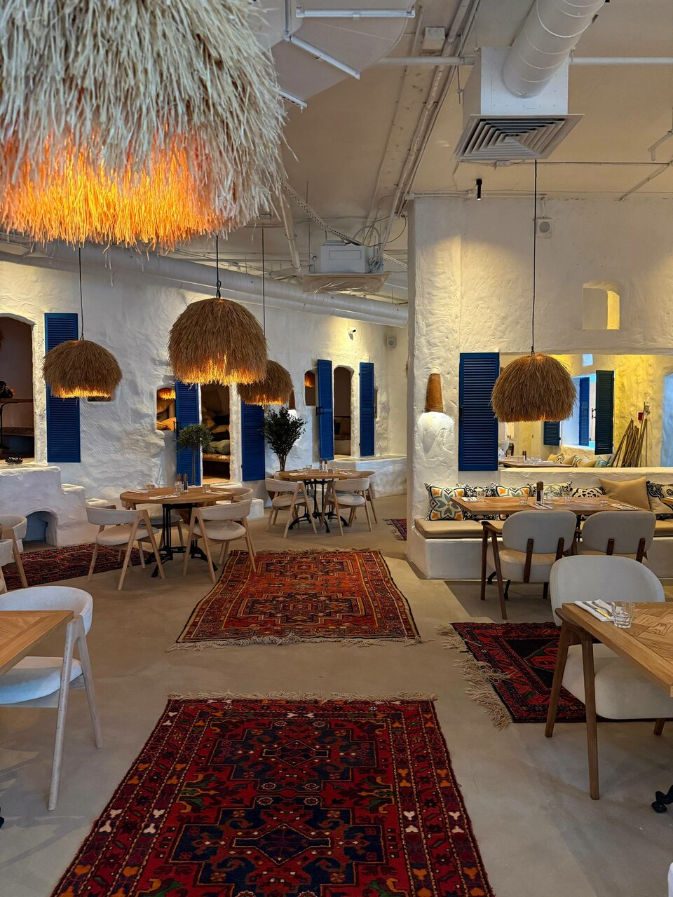
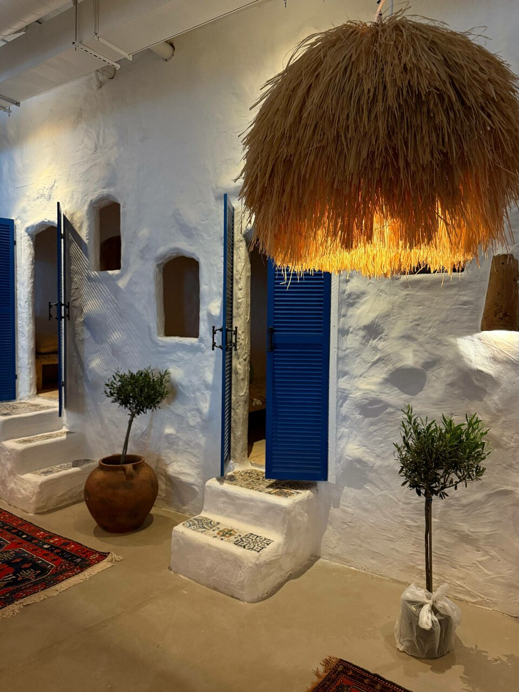
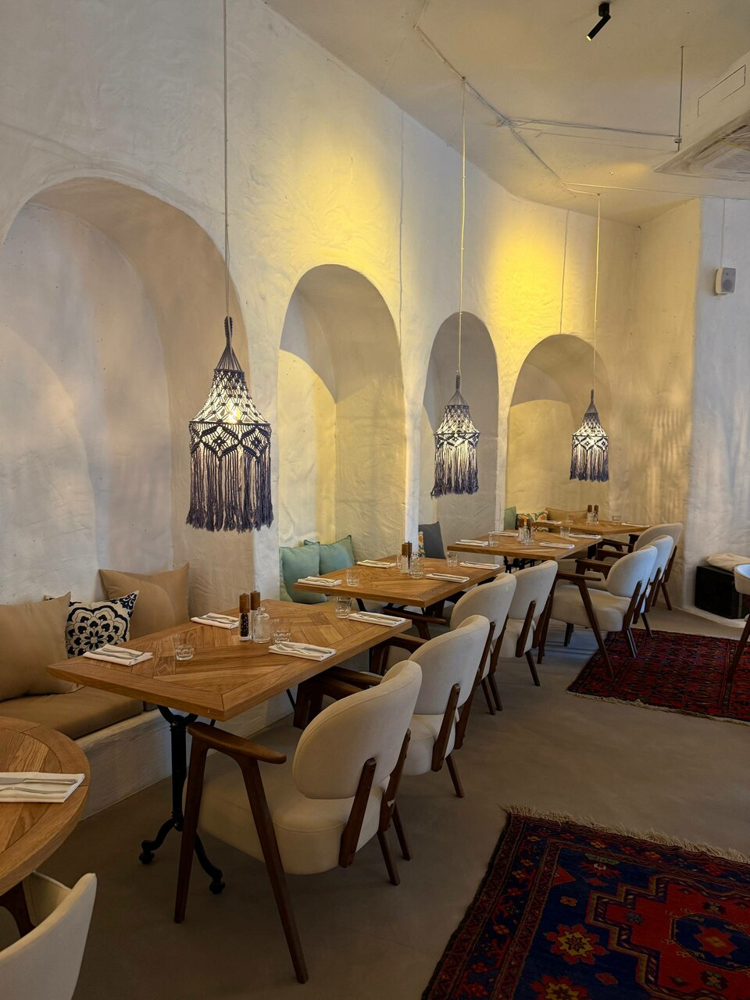

Кавказская кухня · Мосфильмовская, 55
За одним
столом.
Хинкал, блюда на углях, национальная выпечка и долгий чай. В «Лайлат» есть повод собраться.
Открыть менюЕжедневно
12:00–02:00Найти ресторан
12:00–02:00Найти ресторан

К столу
От хинкала
до бакинской пахлавы
Начните с намазок и салатов, выберите горячее из хоспера или с мангала. А к чаю — пахлаву, щербет и варенье.
Внутри ресторана
Свет, фактуры
и синие ставни.
Белые стены, ковры, плетёные светильники. Пространство для обеда, семейного ужина и встречи с близкими.
Больше фотографий

Ждём в гости
До встречи
в «Лайлат».
Москва, Мосфильмовская улица, 55
Ежедневно, 12:00–02:00
+7 (901) 707-28-28